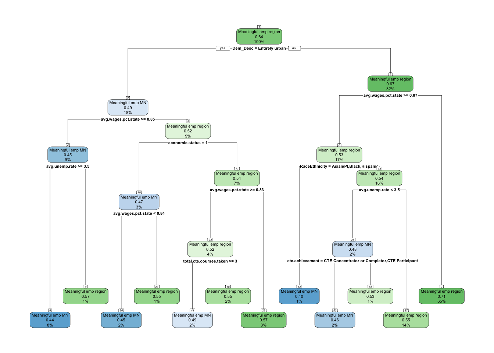
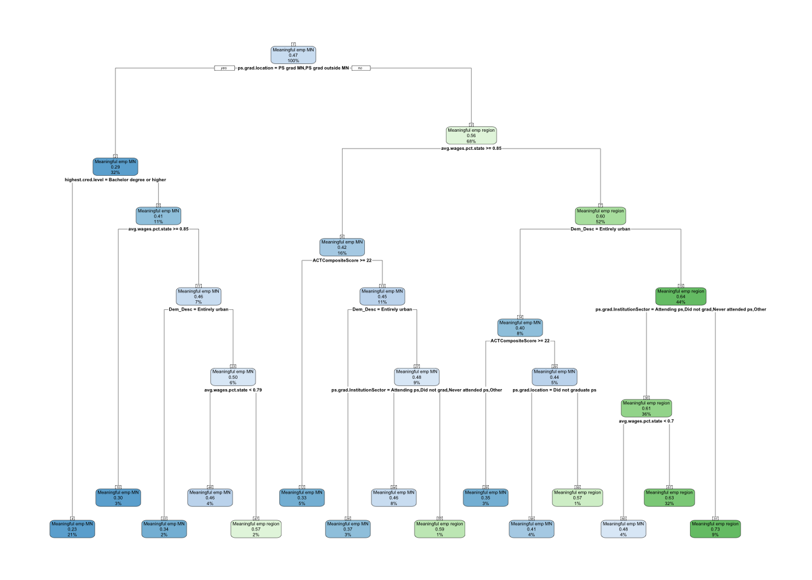
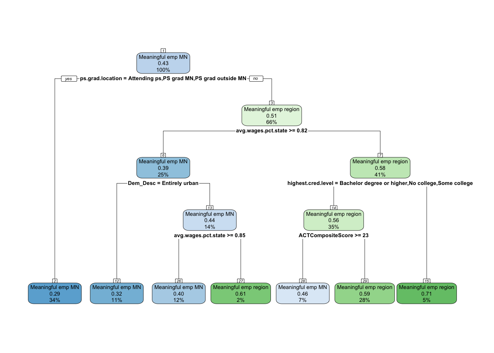
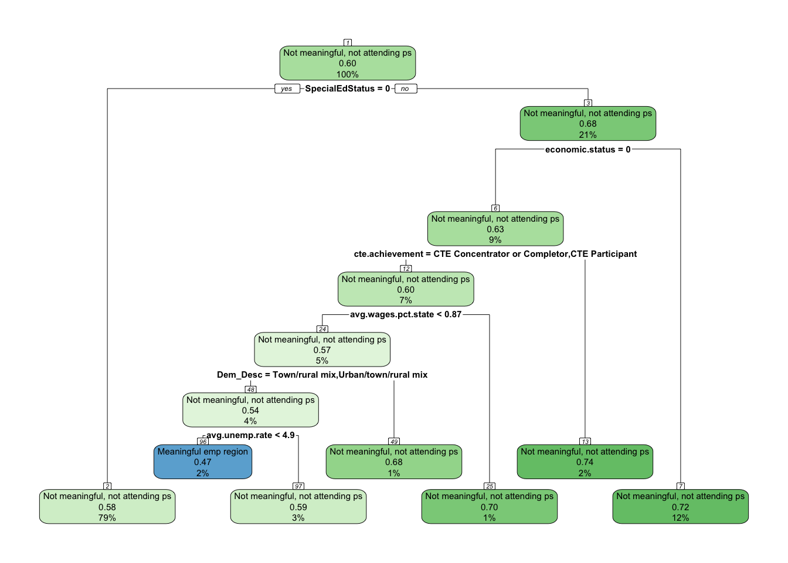
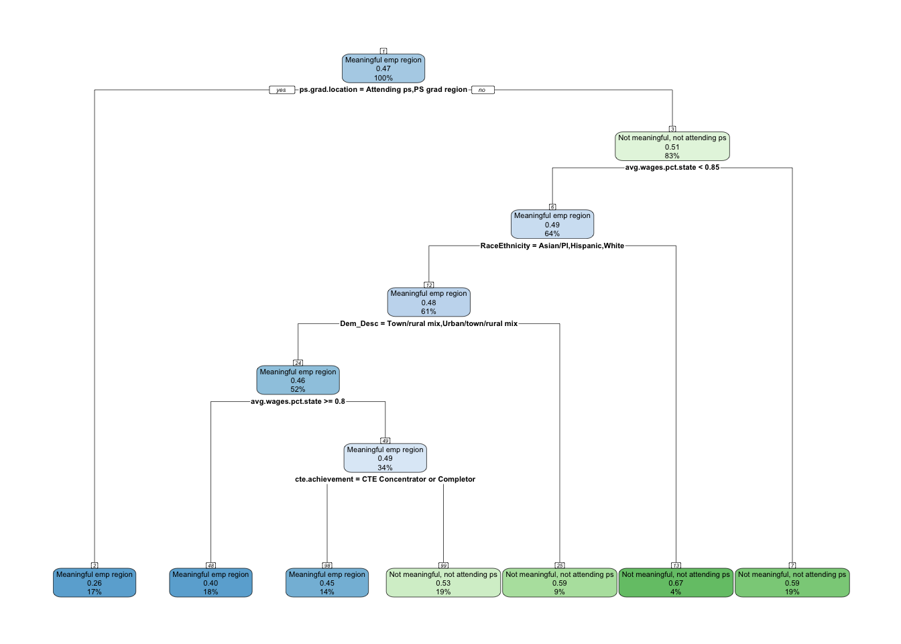
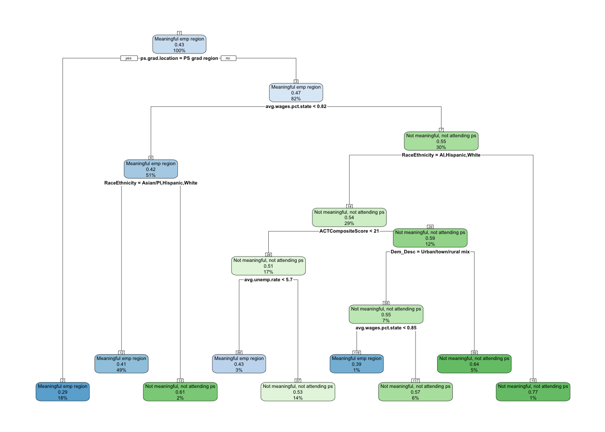
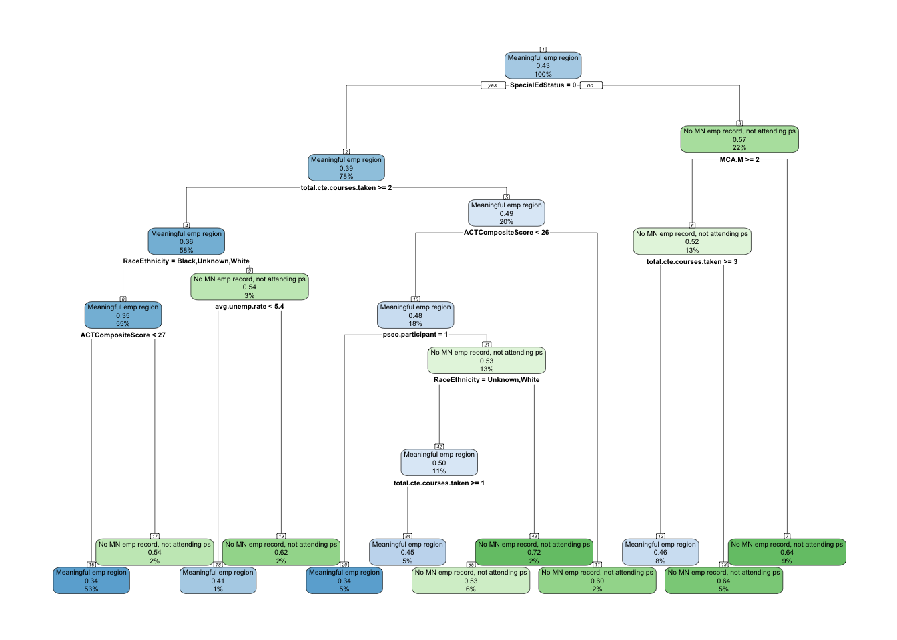
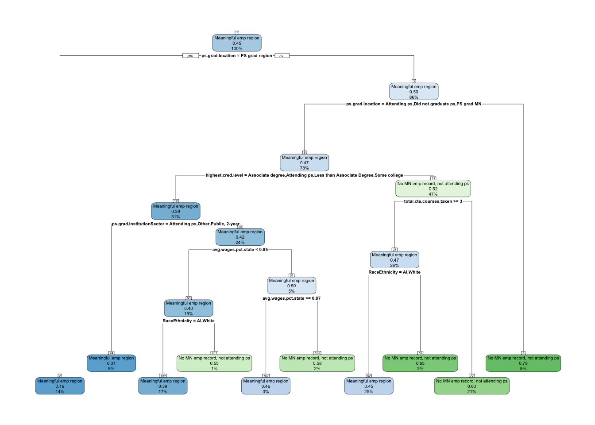
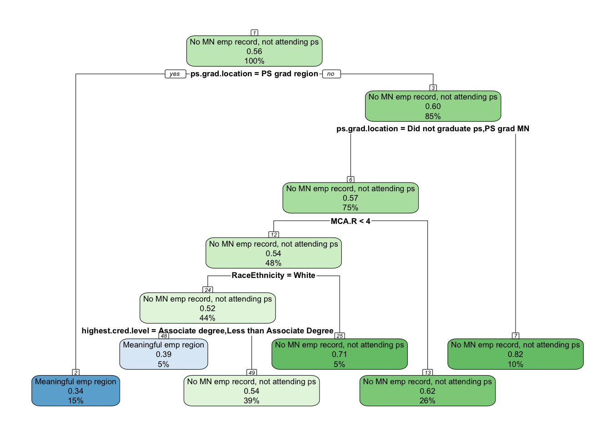

Our analysis of local employment using cross-tabs, Kramer v-test, and ANOVA tables, we identified the following rank of importance regarding independent variable relationships to employment outcomes after high school;
1. Strong Predictors of Regional Employment and Disconnection
These variables consistently show strong or moderate Cramer’s V values and clear differences in meaningful employment in the region, making them strong candidates for inclusion in modeling.
Variable
Type
Key Insights
ps.grad.location
Postsecondary
Strongest predictor of regional employment. Local grads more likely to stay.
ps.grad
Postsecondary
Graduation itself reduces disconnection and improves employment outcomes.
2-year grads more likely to stay regional; 4-year grads more mobile.
economic.status
Demographic
Low-income students consistently more disconnected, especially early.
RaceEthnicity
Demographic
Persistent racial gaps. Black, AI, Hispanic students more likely disconnected.
Dem_Desc
High School Characteristic
Rural grads more regionally tied; metro students more mobile/disconnected.
ACTCompositeScore
Accomplishment (cont.)
Higher scores = more statewide mobility, but not always regional.
pseo.participant
Accomplishment
Linked to early employment or enrollment; reduces disconnection.
2. Moderate Predictors — Some Association, Less Consistency
These variables show moderate associations with outcomes. Their predictive value may depend on how they interact with other variables and could be useful in modeling, especially when looking for cumulative effects.
Variable
Type
Key Insights
SpecialEdStatus
Demographic
Somewhat lower employment, higher disconnection.
Grad.year.covid
Demographic
Post-COVID grads slightly more disconnected early on.
cte.achievement
Accomplishment
Boosts regional employment, especially early.
total.cte.courses.taken
Accomplishment (cont.)
More courses = slight boost in employment, especially regionally.
avg.unemp.rate
HS Characteristic (cont.)
Higher unemployment → more disconnection. Small effect.
avg.wage.pct.state
HS Characteristic (cont.)
Higher wage counties → less disconnection. Small but consistent.
MCA Math & Reading
Accomplishment (cont.)
Slight association with higher employment, mostly MN-wide.
3. Weak or Inconsistent Predictors — Candidates for Dropping
These variables showed very weak associations (low Cramer’s V, minimal group differences) and could be considered for dropping from modeling, unless interaction effects suggest otherwise.
We now want to build a model to see which variables are most predictive and resulting in clear guidance in how regional workforce organizations can influence workforce retainment/growth among their high school graduates. We will only use the strong and moderate predictors for this analysis. Here are the predictors I will use by the type of variable;
Variable
Type
Notes
english.learner
Demographic
Minimal differences, especially when controlling for other variables.
non.english.home
Demographic
Weak signal, may overlap with other demographics.
sat.taken
Accomplishment
Tiny population, not informative.
took.ACT
Accomplishment
Near-universal participation, little discriminatory value.
ap.exam
Accomplishment
Modest effect, likely overlapping with other academic indicators.
Demographic
economic.status
RaceEthnicity
SpecialEdStatus
High school characteristics
Dem_Desc
avg.unemp.rate
avg.wage.pct.state
High school accomplishments
ACTCompositeScore
pseo.participant
cte.achievement
total.cte.courses.taken
MCA Math
MCA Reading
MCA Science
Post-secondary
ps.grad.location
ps.grad
highest.cred.level
ps.grad.InstitutionSector
Employment states
Currently, we have the following employment states for 1-, 5- and 10-years after graduating high school.
Meaningful emp region: Individual has meaningful employment in the region of their high school.
Meaningful emp MN: Individual has meaningful employment in Minnesota, but not in the region of their high school.
Attending ps: Individual is attending post-secondary and does not have meaningful employment.
Not meaningful, not attending ps: Individual is working in Minnesota, but it is not meaningful and is not attending post-secondary.
No MN record, not attending ps: Individual does not have a MN employment record and is not attending post-secondary.
Methodology
This study investigates the factors that influence whether high school graduates achieve meaningful employment in the same region as their high school at 1, 5, and 10 years after graduation. To isolate and understand the predictors of this specific outcome, the analysis compares it separately against three alternative post-graduation statuses:
Meaningful employment in Minnesota, but outside the region
Not meaningful employment in Minnesota and not attending post-secondary
No Minnesota employment record and not attending post-secondary
Graduates classified as Attending post-secondary at the time of measurement are excluded from the analysis, as their employment pathways are distinct and not directly comparable to full-time workforce participation.
For each of the three alternative statuses and each time point (1, 5, and 10 years after graduation), a separate binary classification model is created, resulting in nine total models. This binary framework ensures that “Meaningful employment in the region” is always the positive class, allowing a direct focus on distinguishing regional retention from each alternative pathway.
The modeling process follows these steps:
Data Preparation All predictor variables include demographic characteristics, high school achievement indicators, and postsecondary attainment measures. Records with missing target outcome categories are excluded. For each binary comparison, the dataset is filtered to only include the two relevant classes, with “Meaningful employment in the region” coded as the positive class.
Training and Test Split For each binary dataset, the data is randomly split into a training set (70–80%) and a testing set (20–30%) to ensure that model evaluation is conducted on previously unseen data.
Modeling
We are going to use the following method to each binary comparison:
CART (Classification and Regression Tree) for interpretability and identification of clear decision rules. We will start by developing the base model, and then do pre- and post-pruning to determine which model provides the best accuracy.
Evaluation Models are evaluated on the testing set using accuracy, Cohen’s kappa, balanced accuracy, sensitivity, and specificity. Variable importance is examined to identify the most influential predictors for each comparison and time point.
This approach emphasizes clarity in interpretation by focusing each model on a single binary distinction, making it easier to identify which factors most strongly differentiate graduates who achieve meaningful regional employment from those on alternative pathways.
Analysis - Meaningful employment region vs. Meaningful employment MN
Summary of analysis
One year after graduation, employment location is driven primarily by local economic conditions and high school characteristics. The most important split is regional wage competitiveness — higher-wage regions relative to the state average are strongly associated with graduates staying in the region. High school urbanicity further refines this relationship, with entirely urban schools showing distinct retention and mobility patterns. Individual-level factors like economic status, race/ethnicity, and career and technical education (CTE) achievement also play a role, suggesting that both community context and student background influence early employment geography.
By five years after graduation, the influence shifts markedly toward postsecondary experiences. The single most important factor is where the graduate attended or completed postsecondary education — in-state or out-of-state. This variable dominates the first split of the tree. Educational attainment (especially holding a bachelor’s degree or higher) and ACT Composite Score further distinguish mobility patterns, with higher academic performance often linked to greater geographic mobility. While regional wages and high school urbanicity still matter, their influence is secondary to postsecondary pathways at this stage.
A decade after graduation, postsecondary location remains the most powerful predictor of employment location, underscoring its long-lasting impact. However, regional wage competitiveness regains prominence as a major pull factor, suggesting that economic opportunities increasingly drive retention over time. Educational attainment remains a strong differentiator, and ACT Composite Score continues to be associated with mobility among certain educational groups. High school urbanicity still appears in the decision path, indicating that the geographic context of secondary education has a lasting, if smaller, influence even after ten years.
Overall trend: The models show a clear transition from local economic and high school contextual factors dominating immediately after graduation to postsecondary location and attainment driving employment geography mid- and long-term, with regional wage competitiveness and school context maintaining a consistent but evolving role throughout.
Model Overviews
One Year After Graduation
Model: Pre-pruned classification tree
Key predictors:
Average wages (percent of state average) – higher wages in the region strongly linked to local employment.
High school location (urbanicity) – graduates from entirely urban schools follow different employment patterns than those from rural or mixed settings.
Economic status – low-income students follow different employment patterns.
Race/Ethnicity – certain groups (Asian/PI, Black, Hispanic) show distinct employment trends.
CTE achievement – CTE completion or participation is associated with remaining in the region.
Main takeaway: At one year, local economic conditions and high school context dominate, with additional influence from economic status and race/ethnicity. Higher-wage, lower-unemployment regions predict regional employment, while high school urbanicity modifies that relationship.
Five Years After Graduation
Model: Pre-pruned classification tree
Key predictors:
Postsecondary location – whether the person graduated or attended postsecondary in-state or out-of-state is the root split.
Highest credential level – bachelor’s degree or higher vs. less education.
Average wages (percent of state average) – higher wages in the region predict regional employment.
ACT Composite Score – higher scores linked with leaving the region in certain branches.
High school location (urbanicity) – continues to shape employment location patterns.
Main takeaway: By year five, postsecondary pathways become the most important factor in determining employment location, with credential level and ACT scores indicating mobility. Regional wages and high school urbanicity still matter, but education after high school is now central.
Ten Years After Graduation
Model: Post-pruned classification tree
Key predictors:
Postsecondary location – attending or graduating in-state/out-of-state remains the root split.
Average wages (percent of state average) – high regional wages predict staying in-region.
Highest credential level – bachelor’s degree or higher, no college, or some college differentiate outcomes.
ACT Composite Score – higher scores linked with leaving the region in certain educational groups.
High school location (urbanicity) – continues to refine employment location patterns even a decade out.
Main takeaway: At ten years, postsecondary location remains the dominant driver of where people work, but regional wage competitiveness and educational attainment heavily influence retention. ACT scores and high school urbanicity refine the picture, suggesting long-term mobility is shaped by both economic pull factors and the educational trajectory set in the first few years after graduation.
One year after graduation
First I’m going to filter out the data so only individuals that had meaningful employment in the region or Minnesota are in the dataset. In addition, I’m going to remove all the post-secondary variables from the model since those are variables that take place in the future. In addition, I’m going to remove individuals that are currently attending college one year after graduation. This should keep the model clean.
The table below shows that 64% of the individuals have meaningful employment in their high school region compared to 36% that have meaningful employment in Minnesota, but not their region.
I know the base model is going to overfit and provide an overly complex tree due to having a cost penalty of 0. So I’m just going to print the complexity plot in order to see what the appropriate CP would be to minimize xerror.
set.seed(1234)sample_ind <-sample(nrow(meaningful.emp.mn.grad.year.1), nrow(meaningful.emp.mn.grad.year.1) *.7)train <- meaningful.emp.mn.grad.year.1[sample_ind,]test <- meaningful.emp.mn.grad.year.1[-sample_ind,]#Base modelmeaningful.emp.mn.grad.year.1.model <-rpart(grad.year.1~ ., data = train, method ="class", control =rpart.control(cp =0))# Accuracytest$pred <-predict(meaningful.emp.mn.grad.year.1.model, test, type ="class")accuracy_base <-mean(test$pred == test$grad.year.1)percent(accuracy_base, accuracy = .1)
[1] "59.4%"
# Examine the complexity plotprintcp(meaningful.emp.mn.grad.year.1.model)
Accuracy: 59.4% (lower than the ~64% you had with post-secondary variables included)
The tree is using 13 variables from demographics, high school characteristics, and high school accomplishments
The lowest cross-validation error (xerror) in this table is around 0.97894 at cp ≈ 0.0011121 (nsplit = 10) — although several close values occur between cp = 0.002–0.001
Pre-pruning
Next, we need to prune. We can either pre-prune or post-prune. We will start with pre-pruning and use each method - max depth, min depth, and min bucket. It’s recommended that I start with the following parameters;
This is a nice jump — going from 59.4% in the base model to 63.9% with pre-pruning shows the simpler tree is generalizing better.
A few things stand out:
Variables used dropped from 13 → 7 — the tree is focusing mostly on economic and regional labor market factors, plus CTE accomplishments and demographics.
The lowest cross-validation error (xerror = 0.97731) happens at nsplit = 2, cp ≈ 0.003707 — but several later splits are very close in error, so the 1-SE rule will likely choose an even simpler model in post-pruning.
Pre-pruning has already reduced overfitting by limiting depth and split size — post-pruning now just needs to trim a bit further.
If we follow the workflow:
Base model → done (59.4%)
Pre-pruning → done (63.9%)
Post-pruning → use the cp table from this pre-pruned model, find the cp using the 1-SE rule, and prune.
Post-pruning
The idea here is to allow the decision tree to grow fully and observe the CP value. There are two methods for identifying the CP code;
Use the cp value with the lowest xerror from the base model.
Use the cp value with the next lowest xerror that is within the standard error.
Since the lowest xerror had a CP = 0, we will use the 1-SE rule.
cp_table <- meaningful.emp.mn.grad.year.1.model.preprune$cptablemin_xerror <-min(cp_table[, "xerror"])min_xerror_se <- cp_table[which.min(cp_table[,"xerror"]), "xstd"]threshold <- min_xerror + min_xerror_seone_se_index <-which(cp_table[, "xerror"] <= threshold)[1] cp_1se <- cp_table[one_se_index, "CP"]optimal_cp <- meaningful.emp.mn.grad.year.1.model.preprune$cptable[which.min(meaningful.emp.mn.grad.year.1.model.preprune$cptable[, "xerror"]), "CP"]# Prune the hr_base_model based on the optimal cp valuemeaningful.emp.mn.grad.year.1.model.postprune <- rpart::prune(meaningful.emp.mn.grad.year.1.model.preprune, cp = cp_1se)# Compute the accuracy of the pruned treetest$pred <-predict(meaningful.emp.mn.grad.year.1.model.postprune, test, type ="class")accuracy_postprun <-mean(test$pred == test$grad.year.1)percent(accuracy_postprun, accuracy = .1)
[1] "63.9%"
# Examine the complexity plotprintcp(meaningful.emp.mn.grad.year.1.model.postprune)
The post-pruned model over simplifies the model and doesn’t make any gains in accuracy. So I’m going to use the pre-pruned model here.
#Plot treerpart.plot(meaningful.emp.mn.grad.year.1.model.preprune, nn =TRUE)

Main takeaway
The model predicts whether someone is in meaningful employment in their high school region vs. meaningful employment elsewhere in MN one year after graduation, using only pre-high school graduation factors (no post-secondary variables).
Root split – Community type (Dem_Desc)
The first and strongest split is whether the graduate is from an entirely urban area or not.
Why important? This suggests that where a student lives is the single largest driver of whether they stay employed in their home region vs. moving elsewhere in MN.
Left branch – Entirely urban graduates
Split on avg.wages.pct.state
If ≥ 0.835, meaning local wages are at least 83.5% of the state average, the next factor considered is avg.unemp.rate:
> 5.13% unemployment → More likely to work elsewhere in MN.
≤ 5.13% unemployment → More likely to stay in the region.
If < 0.835 local wage share, the next split is on economic.status:
Low-income (1) → Further split on wage pct again (0.84 threshold)
Low wage % (< 0.84) → Stay in region
Higher wage % → Leave region
Not low-income → Split on total.cte.courses.taken
> 3 CTE courses → Stay in region
≤ 3 → Leave region
Right branch – Not entirely urban graduates
Split on avg.wages.pct.state (≥ 0.847)
If yes → Next split on RaceEthnicity:
Asian/PI, Black, Hispanic → More likely to leave region
Others → Split on avg.unemp.rate:
< 5.13% → More likely to stay in region
Higher → Further split on cte.achievement:
CTE concentrator/complete/participant → More likely to leave
Others → More likely to stay
Patterns emerging
Local economic conditions (avg wages relative to state, local unemployment rate) are major predictors in both urban and rural contexts.
CTE involvement and number of CTE courses affect retention, especially for non-urban students with weaker local economies.
One year after high school graduation, whether graduates stay employed in their home region or work elsewhere in Minnesota is shaped by a mix of community type, local economic conditions, and student background.
Graduates from entirely urban areas are most influenced by local wages and unemployment rates. If wages are relatively high but unemployment is also high, they are more likely to leave for work elsewhere. Lower-income students in urban areas tend to stay if local wages are decent, while those who took many CTE courses are also more likely to remain in their region.
Graduates from non-urban areas are also shaped by local wage levels, but race and ethnicity play a stronger role. Students from Asian/PI, Black, and Hispanic backgrounds in higher-wage areas are more likely to leave. For others, low local unemployment encourages staying. Among those facing higher unemployment, CTE concentrators and participants tend to leave, while other students often remain.
Overall, urbanicity and local labor market health form the backbone of these predictions, with economic status, race/ethnicity, and CTE experience shaping the finer details of whether graduates remain in their home region for work.
Five years after graduation
I’m going to follow the same process as the one year after graduation process, but I’m going to add in the post-secondary variables now.
The table below a much more balanced classifications with 47% of the individuals having meaningful employment in their high school region compared to 53% that have meaningful employment in Minnesota, but not their region.
I know the base model is going to overfit and provide an overly complex tree due to having a cost penalty of 0. So I’m just going to print the complexity plot in order to see what the appropriate CP would be to minimize xerror.
set.seed(1234)sample_ind <-sample(nrow(meaningful.emp.mn.grad.year.5), nrow(meaningful.emp.mn.grad.year.5) *.7)train <- meaningful.emp.mn.grad.year.5[sample_ind,]test <- meaningful.emp.mn.grad.year.5[-sample_ind,]#Base modelmeaningful.emp.mn.grad.year.5.model <-rpart(grad.year.5~ ., data = train, method ="class", control =rpart.control(cp =0))# Accuracytest$pred <-predict(meaningful.emp.mn.grad.year.5.model, test, type ="class")accuracy_base <-mean(test$pred == test$grad.year.5)percent(accuracy_base, accuracy = .1)
[1] "60.9%"
# Examine the complexity plotprintcp(meaningful.emp.mn.grad.year.5.model)
Achieved 60.9% accuracy — higher than the 1-year base model (59.4%), likely due to a more balanced outcome distribution and inclusion of post-secondary variables.
The first major split (CP ≈ 0.1689) yields a large accuracy gain.
Substantial improvement again at the second split (CP ≈ 0.0561).
Beyond ~20 splits, the error reduction flattens, with minimal performance gain from additional complexity.
The fully grown tree is large (1484 splits at CP = 0), suggesting strong potential for simplification via pre-pruning or post-pruning.
Early indication of driver patterns
Both economic context and post-secondary attainment appear to be influential in early splits, hinting that the 5-year employment outcome is shaped by a combination of local labor market conditions and educational pathways taken after high school.
Pre-pruning
Next, we need to prune. We can either pre-prune or post-prune. We will start with pre-pruning and use each method - max depth, min depth, and min bucket. It’s recommended that I start with the following parameters;
Jumped from 60.9% → 65.6% — that’s a +4.7 percentage point increase, which is substantial for a classification problem like this.
This suggests the pre-pruning settings effectively cut out overfitting noise from the base model.
Tree size reduction:
Base model: 1,484 splits → Pre-pruned: only 14 splits.
That’s over a 99% reduction in tree complexity.
Predictor focus:
Only 6 predictors remain:
ACTCompositeScore
avg.wages.pct.state
Dem_Desc (demographic descriptor)
highest.cred.level
ps.grad.InstitutionSector
ps.grad.location
This means that by 5 years after graduation, educational attainment and post-secondary characteristics are major drivers of meaningful employment location — along with ACT performance and economic context.
Splitting structure (likely):
Early splits probably separate graduates based on highest.cred.level and ps.grad.location — consistent with your earlier trees.
ACTCompositeScore and avg.wages.pct.state likely refine predictions within subgroups.
Practical implications:
Post-secondary variables are now clearly relevant — as expected, they’re making early, influential splits.
The reduced model is easier to explain to stakeholders while still capturing the main drivers of location-based employment outcomes.
If we follow your workflow, the next step would be post-pruning using the 1-SE rule on this pre-pruned model to see if we can shave off a few more splits without losing accuracy — but here, the tree is already small, so the accuracy/complexity trade-off may not be worth it.
Post-pruning
The idea here is to allow the decision tree to grow fully and observe the CP value. There are two methods for identifying the CP code;
Use the cp value with the lowest xerror from the base model.
Use the cp value with the next lowest xerror that is within the standard error.
We will use the 1-SE rule.
cp_table <- meaningful.emp.mn.grad.year.5.model.preprune$cptablemin_xerror <-min(cp_table[, "xerror"])min_xerror_se <- cp_table[which.min(cp_table[,"xerror"]), "xstd"]threshold <- min_xerror + min_xerror_seone_se_index <-which(cp_table[, "xerror"] <= threshold)[1] cp_1se <- cp_table[one_se_index, "CP"]optimal_cp <- meaningful.emp.mn.grad.year.5.model.preprune$cptable[which.min(meaningful.emp.mn.grad.year.5.model.preprune$cptable[, "xerror"]), "CP"]# Prune the hr_base_model based on the optimal cp valuemeaningful.emp.mn.grad.year.5.model.postprune <- rpart::prune(meaningful.emp.mn.grad.year.5.model.preprune, cp = cp_1se)# Compute the accuracy of the pruned treetest$pred <-predict(meaningful.emp.mn.grad.year.5.model.postprune, test, type ="class")accuracy_postprun <-mean(test$pred == test$grad.year.5)percent(accuracy_postprun, accuracy = .1)
[1] "65.4%"
# Examine the complexity plotprintcp(meaningful.emp.mn.grad.year.5.model.postprune)
The post-pruned model over simplifies the model and doesn’t make any gains in accuracy. So I’m going to use the pre-pruned model here.
#Plot treerpart.plot(meaningful.emp.mn.grad.year.5.model.preprune, nn =TRUE)

Main takeaway
Pathways to Leaving MN (Meaningful Employment outside MN)
Graduate outside MN →
Bachelor’s degree or higher →
Local wages ≥ 65% of state avg → Leave (especially if not entirely urban)
Local wages < 65% → sometimes Stay, but mixed outcomes
Less than bachelor’s → outcome varies, but more likely Leave than stay
Graduate in MN or didn’t finish PS →
Local wages ≥ 65% →
ACT ≥ 23 + Non-entirely urban → Leave
Local wages < 65% →
Entirely urban + ACT ≥ 23 → Leave
Pathways to Staying in MN (Meaningful Employment in MN)
Graduate in MN or didn’t finish PS →
Local wages ≥ 65% →
ACT < 23 → Stay regardless of urbanicity
Local wages < 65% →
Non-entirely urban → Stay
Entirely urban + average/low ACT → Stay
Graduate outside MN →
Local wages < 65% →
Entirely urban + credential < Bachelor’s → Stay in some cases
Key message:
Graduating outside MN and/or living in lower-wage MN regions are the strongest “push” factors toward working elsewhere.
Higher wages in MN can retain grads unless academic and mobility factors (high ACT, high credentials, urban background) tip the balance.
Ten years after graduation
I’m going to follow the same process as the one year after graduation process, but I’m going to add in the post-secondary variables now.
The table below a much more balanced classifications with 47% of the individuals having meaningful employment in their high school region compared to 53% that have meaningful employment in Minnesota, but not their region.
I know the base model is going to overfit and provide an overly complex tree due to having a cost penalty of 0. So I’m just going to print the complexity plot in order to see what the appropriate CP would be to minimize xerror.
set.seed(1234)sample_ind <-sample(nrow(meaningful.emp.mn.grad.year.10), nrow(meaningful.emp.mn.grad.year.10) *.7)train <- meaningful.emp.mn.grad.year.10[sample_ind,]test <- meaningful.emp.mn.grad.year.10[-sample_ind,]#Base modelmeaningful.emp.mn.grad.year.10.model <-rpart(grad.year.10~ ., data = train, method ="class", control =rpart.control(cp =0))# Accuracytest$pred <-predict(meaningful.emp.mn.grad.year.10.model, test, type ="class")accuracy_base <-mean(test$pred == test$grad.year.10)percent(accuracy_base, accuracy = .1)
[1] "60.4%"
# Examine the complexity plotprintcp(meaningful.emp.mn.grad.year.10.model)
Achieved 60.4% accuracy — higher than the 1-year base model (59.4%), likely due to a more balanced outcome distribution and inclusion of post-secondary variables.
Ten years out, meaningful employment location seems to be shaped by a combination of high school academic background, economic conditions, and postsecondary outcomes — no single category dominates.
This is consistent with the idea that life pathways diversify with time, and different predictors matter for different subgroups.
Pre-pruning
Next, we need to prune. We can either pre-prune or post-prune. We will start with pre-pruning and use each method - max depth, min depth, and min bucket. It’s recommended that I start with the following parameters;
Accuracy jumps from 60.4% in the base model to 64.7% with pre-pruning — that’s a bigger relative improvement than you saw at 5 years, suggesting the pruning is doing a lot to remove noise.
The post-pruned model does simplify the model and gets rid of one of the economic conditions which makes sense to me. I’m going to use the post-pruned model here.
#Plot treerpart.plot(meaningful.emp.mn.grad.year.10.model.postprune, nn =TRUE)

Main takeaway
Root Split – Postsecondary location
The first and most important division is ps.grad.location.
If a person attended postsecondary, graduated in MN, or graduated outside MN, they are more likely to have Meaningful Employment in Minnesota 10 years later (root average 43%).
If they did not fall into those categories, we branch into the wage-based splits.
Left Branch – Postsecondary link
Within the group who attended/graduated postsecondary, there’s a further split by Dem_Desc (Entirely urban):
Entirely urban individuals have slightly lower MN employment rates (32%) compared to non-entirely urban (40–44%).
For non-urban, higher wages relative to state (≥ 0.85) are linked to a greater likelihood of working in the region rather than MN (61%).
Lower relative wages keep outcomes more MN-focused (40%).
Right Branch – Economic context
For those without the postsecondary location advantage, the next key driver is avg.wages.pct.state ≥ 0.82:
Higher wage areas (≥ 0.82) skew more toward regional employment (51%) than MN-based.
Within this, highest.cred.level matters:
Bachelor’s or higher, no college, or some college are split further by ACTCompositeScore:
High ACT scores (≥ 23) link strongly to regional employment (59–71%).
Lower ACT scores show more mixed MN/regional patterns (46–56%).
Big Picture Insights
Postsecondary location is the single strongest long-term predictor. Staying/returning to MN for education is associated with higher odds of being employed in MN 10 years later.
Local wage competitiveness pushes outcomes toward regional employment, especially in higher-wage areas.
Urbanicity dampens MN retention slightly in postsecondary-connected individuals.
Academic ability (ACT) still has predictive value a decade later, interacting with wage context and education level.
Analysis - Meaningful employment region vs. Not meaningful and not attending post-secondary
Summary of analysis
One year after graduation, meaningful employment region status is driven primarily by local economic conditions and high school characteristics. The most important split is regional wage competitiveness — higher-wage regions relative to the state average are strongly associated with being in a meaningful employment region. High school urbanicity further refines this relationship, with graduates from entirely urban settings showing distinct patterns. Individual-level factors like economic status, race/ethnicity, and career and technical education (CTE) achievement also contribute, indicating that both community context and student background influence early career outcomes.
By five years after graduation, the influence shifts strongly toward postsecondary experiences. The single most important factor is whether the graduate attended or completed postsecondary education in the same region — this dominates the first split of the tree. Regional wages and race/ethnicity further distinguish employment outcomes, with certain demographic groups and higher-wage areas linked to higher rates of meaningful employment. CTE achievement continues to appear in the pathways, but its influence is secondary to postsecondary location.
A decade after graduation, postsecondary location remains the most powerful predictor, underscoring its long-lasting effect on employment outcomes. Regional wage competitiveness re-emerges as a major factor, especially in differentiating outcomes for those who did not graduate postsecondary in the same region. Race/ethnicity, ACT Composite Score, and local unemployment rates further refine these distinctions. High school urbanicity still appears in some decision paths, showing that secondary school context has a lasting, though smaller, influence even after ten years.
Overall trend: The models show a clear progression from local economic and high school contextual factors dominating immediately after graduation to postsecondary location driving employment outcomes mid- and long-term. Economic opportunity, as measured by regional wages, regains importance in the long term, while high school and individual background factors remain consistent secondary influences.
Model Overviews
One Year After Graduation
Model: Pre-pruned classification tree
Key predictors:
Average wages (percent of state average) – higher wages in the region strongly linked to meaningful employment.
High school location (urbanicity) – graduates from urban settings follow distinct patterns.
Economic status – low-income students follow different patterns.
Race/Ethnicity – certain groups (Asian/PI, Black, Hispanic) show distinct trends.
CTE achievement – completion or participation is associated with meaningful employment.
Main takeaway: At one year, local economic conditions and high school context dominate, with economic status, race/ethnicity, and CTE achievement adding further differentiation. Higher-wage regions predict meaningful employment, with urbanicity modifying that relationship.
Five Years After Graduation
Model: Pre-pruned classification tree
Key predictors:
Postsecondary location – whether the person attended or graduated postsecondary in the same region is the root split.
Average wages (percent of state average) – higher wages predict meaningful employment.
Race/Ethnicity – certain demographic groups show distinct patterns.
CTE achievement – still present as a differentiating factor.
Main takeaway: By year five, postsecondary location is the strongest factor shaping meaningful employment status, with regional wages and race/ethnicity adding further differentiation. CTE achievement remains relevant but secondary.
Ten Years After Graduation
Model: Post-pruned classification tree (lowest xerror, 8 splits)
Key predictors:
Postsecondary location – graduating postsecondary in the same region is the root split.
Average wages (percent of state average) – higher wages predict meaningful employment.
Race/Ethnicity – certain groups (Asian/PI, Hispanic, White vs. AI, Hispanic, White) follow distinct pathways.
ACT Composite Score – lower scores linked to lower meaningful employment rates in some branches.
Average unemployment rate – lower unemployment associated with higher meaningful employment.
High school location (urbanicity) – continues to refine outcomes in some pathways.
Main takeaway: Ten years out, postsecondary location still dominates, but economic opportunity (regional wages) is again a key driver. Race/ethnicity, ACT scores, and unemployment rates shape additional variation, with high school context still exerting a subtle influence over long-term outcomes.
One year after graduation
First I’m going to filter out the data so only individuals that had meaningful employment in the region or do not have meaningful employment in Minnesota or the region and are not attending post-secondary are in the dataset. In addition, I’m going to remove all the post-secondary variables from the model since those are variables that take place in the future.
The table below shows that 40% of the individuals have meaningful employment in their high school region compared to 60% that do not have meaningful employment in Minnesota or their region and are not attending post-secondary.
I know the base model is going to overfit and provide an overly complex tree due to having a cost penalty of 0. So I’m just going to print the complexity plot in order to see what the appropriate CP would be to minimize xerror.
set.seed(1234)sample_ind <-sample(nrow(not.meaningful.grad.year.1), nrow(not.meaningful.grad.year.1) *.7)train <- not.meaningful.grad.year.1[sample_ind,]test <- not.meaningful.grad.year.1[-sample_ind,]#Base modelnot.meaningful.grad.year.1.model <-rpart(grad.year.1~ ., data = train, method ="class", control =rpart.control(cp =0))# Accuracytest$pred <-predict(not.meaningful.grad.year.1.model, test, type ="class")accuracy_base <-mean(test$pred == test$grad.year.1)percent(accuracy_base, accuracy = .1)
[1] "57.1%"
# Examine the complexity plotprintcp(not.meaningful.grad.year.1.model)
Accuracy is 57.1%, modestly above the 50% baseline for balanced data, but in this case your majority class is 60.5% (“Not meaningful, not attending PS”).
Given the imbalance, the tree may lean toward predicting the majority outcome unless there are strong distinguishing predictors.
Pre-pruning
Next, we need to prune. We can either pre-prune or post-prune. We will start with pre-pruning and use each method - max depth, min depth, and min bucket. It’s recommended that I start with the following parameters;
maxdepth: 5
minsplit: round(2% of nrow(train)) which is 598.
minbucket: round(minsplit / 3) which is 199
cp = 0
Those parameters gave me a tree with no splits. I’m going to make adjustments to the parameters until I get something useful.
The post-pruned model provides a much simpler model - 6 splits instead of pre-pruned’s 27 splits - while also retaining the same accuracy. I will dive into that one below.
#Plot treerpart.plot(not.meaningful.grad.year.1.model.postprune, nn =TRUE)

Main takeaway
Special education status is the dominant early separator — having this designation is strongly linked to not having meaningful employment or postsecondary enrollment after 1 year.
Economic status is the next strongest factor for those without special ed — lower economic status is linked to less favorable outcomes.
CTE achievement alone does not guarantee meaningful employment in the region; it only appears beneficial when combined with low local unemployment and specific community types (town/rural mix).
Labor market context matters — lower unemployment rates in the region are associated with better odds of meaningful local employment, even for groups that otherwise have lower probabilities.
The model’s main “positive” pathway (highest chance for meaningful employment) is:
No special education
Not low economic status
CTE participant/completer
Lower-than-average wage ratio in the region
From town/rural mix community type
Low local unemployment (< 4.9%)
The decision tree analysis shows that early career outcomes are shaped most strongly by student support status, economic background, and local labor market conditions.
Special education status emerges as the largest dividing factor. Students who received special education services during high school are substantially more likely to be in jobs that are not considered meaningful and are not attending postsecondary education within one year of graduation.
For students without special education status, economic status becomes the next major influence. Lower economic status is linked to a greater likelihood of being in non-meaningful employment without postsecondary participation.
Among students with higher economic status, Career and Technical Education (CTE) engagement interacts with local labor market conditions. CTE concentrators and completers have improved odds of meaningful local employment only when they come from town/rural mix communities and are in areas with low unemployment (<4.9%). In these favorable conditions, their probability of being in meaningful employment in the region rises markedly, making this the main positive pathway in the model.
However, CTE engagement alone does not guarantee better outcomes—in higher-unemployment or higher-wage-competitive regions, even CTE participants are more likely to be in non-meaningful employment without postsecondary enrollment.
Policy implications
Support transition for special education students: These students may need targeted career placement and postsecondary connection efforts to improve early outcomes.
Address economic barriers: Students from lower economic status households face structural disadvantages that appear quickly after graduation.
Strengthen local labor markets: For CTE’s benefits to materialize, strong local employment demand is crucial. Efforts to reduce unemployment in rural/town regions could magnify CTE’s impact on retaining talent locally.
Align CTE with local opportunities: In regions with higher unemployment or wage competition, CTE programming may need closer alignment with sectors offering meaningful local employment to prevent early talent loss.
Five years after high school
First I’m going to filter out the data so only individuals that had meaningful employment in the region or do not have meaningful employment in Minnesota or the region and are not attending post-secondary are in the dataset. This time I’m going to leave in the post-secondary variables.
The table below shows that 53% of the individuals have meaningful employment in their high school region compared to 47% that do not have meaningful employment in Minnesota or their region and are not attending post-secondary.
not.meaningful.grad.year.5<- data %>%select(-grad.year.1, -grad.year.10) %>%filter(grad.year.5%in%c("Meaningful emp region", "Not meaningful, not attending ps")) %>%mutate(grad.year.5 =as.factor(grad.year.5))comma(nrow(not.meaningful.grad.year.5))
I know the base model is going to overfit and provide an overly complex tree due to having a cost penalty of 0. So I’m just going to print the complexity plot in order to see what the appropriate CP would be to minimize xerror.
set.seed(1234)sample_ind <-sample(nrow(not.meaningful.grad.year.5), nrow(not.meaningful.grad.year.5) *.7)train <- not.meaningful.grad.year.5[sample_ind,]test <- not.meaningful.grad.year.5[-sample_ind,]#Base modelnot.meaningful.grad.year.5.model <-rpart(grad.year.5~ ., data = train, method ="class", control =rpart.control(cp =0))# Accuracytest$pred <-predict(not.meaningful.grad.year.5.model, test, type ="class")accuracy_base <-mean(test$pred == test$grad.year.5)percent(accuracy_base, accuracy = .1)
[1] "56.0%"
# Examine the complexity plotprintcp(not.meaningful.grad.year.5.model)
Early big CP drops: The first few splits (CP values of 0.042, 0.030, 0.029) suggest there are strong initial rules before the tree starts adding smaller refinements.
Pre-pruning
Next, we need to prune. We can either pre-prune or post-prune. We will start with pre-pruning and use each method - max depth, min depth, and min bucket. It’s recommended that I start with the following parameters;
This is a modest jump in accuracy — going from 56% to 59%. The biggest change is the number of splits; 11 splits vs 1,446.
Main predictors are avg.wages.pct.state, Dem_Desc, ps.grad.InstitutionSector, ps.grad.location, and RaceEthnicity, ACTCompositeScore and cte.achievement.
The post-secondary variables (ps.grad.InstitutionSector and ps.grad.location) are showing up strongly here, meaning they’re playing a role in distinguishing between “Meaningful emp region” and “Not meaningful / not attending PS” at 5 years.
Post-pruning
The idea here is to allow the decision tree to grow fully and observe the CP value. There are two methods for identifying the CP code;
Use the cp value with the lowest xerror from the base model.
Use the cp value with the next lowest xerror that is within the standard error.
cp_table <- not.meaningful.grad.year.5.model.preprune$cptablemin_xerror <-min(cp_table[, "xerror"])min_xerror_se <- cp_table[which.min(cp_table[,"xerror"]), "xstd"]threshold <- min_xerror + min_xerror_seone_se_index <-which(cp_table[, "xerror"] <= threshold)[1] cp_1se <- cp_table[one_se_index, "CP"]optimal_cp <- not.meaningful.grad.year.5.model.preprune$cptable[which.min(not.meaningful.grad.year.5.model.preprune$cptable[, "xerror"]), "CP"]# Prune the hr_base_model based on the optimal cp valuenot.meaningful.grad.year.5.model.postprune <- rpart::prune(not.meaningful.grad.year.5.model.preprune, cp = cp_1se)# Compute the accuracy of the pruned treetest$pred <-predict(not.meaningful.grad.year.5.model.postprune, test, type ="class")accuracy_postprun <-mean(test$pred == test$grad.year.5)percent(accuracy_postprun, accuracy = .1)
[1] "58.9%"
# Examine the complexity plotprintcp(not.meaningful.grad.year.5.model.postprune)
The post-pruned model provides a much simpler model - 6 splits instead of pre-pruned’s 11 splits - while also retaining the same accuracy. I will dive into that one below.
#Plot treerpart.plot(not.meaningful.grad.year.5.model.postprune, nn =TRUE)

Main takeaway
Postsecondary connection (attendance or graduation in-region) is the strongest predictor of meaningful employment at 5 years.
Local wage levels shape outcomes—low-wage areas (<85% of state average) consistently have worse results.
Race/ethnicity interacts with wages and geography, influencing likelihood of success in nuanced ways.
CTE completion offers some advantage in low-wage rural or mixed areas, but it doesn’t fully close the gap.
Five years after high school, the strongest predictor of meaningful employment is whether graduates have a continuing connection to postsecondary education—either by currently attending or by graduating from an institution in the same region. Those with this connection are notably more likely to be in meaningful employment than their peers without it.
Among graduates without this postsecondary link, local economic conditions play a major role. Living in areas where wages are below 85% of the state average sharply reduces the chances of meaningful employment. In higher-wage areas, race and ethnicity become more important, with Asian/Pacific Islander, Hispanic, and White graduates generally faring better. Within this group, community type also matters: those in town or rural mix areas with at least 80% of the state’s average wage levels see higher employment rates, while those in lower-wage rural or mixed areas rely more on career and technical education (CTE) completion to improve their prospects.
Overall, the model suggests that postsecondary engagement, regional wage strength, and demographic context interact to shape employment outcomes at the five-year mark, with CTE providing a modest but noticeable benefit in more economically challenged rural areas.
Ten years after high school
First I’m going to filter out the data so only individuals that had meaningful employment in the region or do not have meaningful employment in Minnesota or the region and are not attending post-secondary are in the dataset. This time I’m going to leave in the post-secondary variables.
The table below shows that 57% of the individuals have meaningful employment in their high school region compared to 43% that do not have meaningful employment in Minnesota or their region and are not attending post-secondary.
not.meaningful.grad.year.10<- data %>%select(-grad.year.1, -grad.year.5) %>%filter(grad.year.10%in%c("Meaningful emp region", "Not meaningful, not attending ps")) %>%mutate(grad.year.10 =as.factor(grad.year.10))comma(nrow(not.meaningful.grad.year.10))
I know the base model is going to overfit and provide an overly complex tree due to having a cost penalty of 0. So I’m just going to print the complexity plot in order to see what the appropriate CP would be to minimize xerror.
set.seed(1234)sample_ind <-sample(nrow(not.meaningful.grad.year.10), nrow(not.meaningful.grad.year.10) *.7)train <- not.meaningful.grad.year.10[sample_ind,]test <- not.meaningful.grad.year.10[-sample_ind,]#Base modelnot.meaningful.grad.year.10.model <-rpart(grad.year.10~ ., data = train, method ="class", control =rpart.control(cp =0))# Accuracytest$pred <-predict(not.meaningful.grad.year.10.model, test, type ="class")accuracy_base <-mean(test$pred == test$grad.year.10)percent(accuracy_base, accuracy = .1)
[1] "56.8%"
# Examine the complexity plotprintcp(not.meaningful.grad.year.10.model)
Root node error: 43.5% (so the model is improving over the majority class baseline, but not dramatically)
Variables in the tree: This set is very similar to your 5-year model — includes ACT scores, MCA scores, economic status, CTE achievement, postsecondary graduation details (sector, location), and demographics.
Splits: The complexity parameter (CP) table shows the tree grew to 766 splits before reaching cp = 0, so without pruning, it’s highly overfit.
Pre-pruning
Next, we need to prune. We can either pre-prune or post-prune. We will start with pre-pruning and use each method - max depth, min depth, and min bucket. It’s recommended that I start with the following parameters;
The post-pruned model provides a much simpler model - 8 splits instead of pre-pruned’s 11 splits - while also retaining the same accuracy. I will dive into that one below.
#Plot treerpart.plot(not.meaningful.grad.year.10.model.postprune, nn =TRUE)

Main takeaway
Regional retention after postsecondary graduation (same region) is a strong positive signal for meaningful employment 10 years later.
Regional wage levels are consistently influential; thresholds around 0.82 and 0.85 of state average wages divide high vs. low opportunity regions.
Race/ethnicity patterns interact with regional wages — some groups show resilience even in low-wage areas, while others are more sensitive to wage context.
Academic performance (ACT score) and regional unemployment provide additional segmentation for lower-wage contexts.
Ten years after graduation, the strongest predictor of being in a meaningful employment region was whether graduates completed postsecondary education in the same region where they were living at the time of graduation. Those who did so were more likely to be in meaningful employment, even in the absence of other favorable conditions.
For graduates who did not complete postsecondary education in their home region, regional wage levels became the next most important factor. Those in regions where the average wage was at least 82% of the state average had relatively better employment outcomes, regardless of other characteristics. In contrast, graduates in lower-wage regions saw outcomes shaped by both race/ethnicity and other contextual factors. Asian, Pacific Islander, Hispanic, and White graduates in these low-wage regions had moderately higher chances of meaningful employment, with further differences based on local unemployment rates. Lower unemployment (<5.7%) was associated with improved outcomes, while higher unemployment dampened them.
For American Indian, Hispanic, and White graduates in low-wage regions, ACT Composite scores further differentiated outcomes. Scores below 21 were linked to lower chances of meaningful employment, particularly for those from urban/town/rural mix areas where average wages were also below 85% of the state average. In these cases, meaningful employment was far less common. However, in similar areas with higher wage levels, outcomes improved substantially.
Overall, the model suggests that a combination of postsecondary geographic retention, regional wage competitiveness, race/ethnicity, academic performance, and local economic conditions interact to shape long-term employment outcomes. Remaining in or returning to one’s home region after completing postsecondary education, especially if that region has competitive wages, stands out as a strong positive pathway toward meaningful employment a decade after high school.
Analysis - Meaningful employment region vs. No MN employment record and not attending post-secondary
Summary of analysis
Key Findings: At 1 year after graduation, the strongest split was Special Education status, followed by career/technical coursework, ACT score, and local labor market conditions. Students without special education status and with higher academic or career/technical engagement were more likely to have meaningful in-region employment.
At 5 years, the anchor variable shifted to PS graduation location. Graduating in the same region as high school strongly predicted remaining in the local workforce. Credential level and institution type moderated outcomes, as did average wages in the region and race/ethnicity.
At 10 years, the PS grad location variable remained dominant. Graduating from a post-secondary institution in the HS region was associated with much higher odds of meaningful in-region employment, while lower reading proficiency, lower credentials, and certain racial/ethnic groupings substantially increased the risk of having no MN employment record.
Interpretation Over Time: In the short term (1 year), local employment was strongly tied to pre-graduation academic performance, special education status, and CTE participation — factors more directly under K-12 control.
By 5 years, post-secondary pathways had become the primary driver, with where and whether someone graduated PS exerting the largest influence. This reflects the transition from immediate labor market entry to post-secondary completion as the central determinant of local retention.
At 10 years, PS location remained the top predictor, but reading proficiency, highest credential level, and race/ethnicity emerged as enduring stratifiers — suggesting long-term career stability hinges on both educational attainment and underlying academic preparation.
Conclusion: Across all three time points, the model accuracy was modestly above the majority-class baseline, indicating predictive value but also the presence of many unmeasured factors. The evolution of splits shows a clear life-course progression: early outcomes shaped by high school performance and programs → mid-term outcomes shaped by PS completion/location → long-term outcomes shaped by a blend of PS factors, academic skill levels, and structural demographics.
Notes: Long-term employment stability is most strongly tied to educational attainment and where postsecondary education was completed. Reading scores and race/ethnicity remain important, while ACTCompositeScore appears in the fuller pre-pruned model but drops out after pruning.
One year after graduation
First I’m going to filter out the data so only individuals that had meaningful employment in the region or do not have a Minnesota employment record and are not attending post-secondary are in the dataset. In addition, I’m going to remove all the post-secondary variables from the model since those are variables that take place in the future.
The table below shows that 57% of the individuals have meaningful employment in their high school region compared to 43% that do not have a Minnesota employment record and are not attending post-secondary.
no.mn.emp.grad.year.1<- data.grad.year.1%>%select(-grad.year.5, -grad.year.10) %>%filter(grad.year.1%in%c("Meaningful emp region", "No MN emp record, not attending ps")) %>%mutate(grad.year.1 =as.factor(grad.year.1))comma(nrow(no.mn.emp.grad.year.1))
I know the base model is going to overfit and provide an overly complex tree due to having a cost penalty of 0. So I’m just going to print the complexity plot in order to see what the appropriate CP would be to minimize xerror.
set.seed(1234)sample_ind <-sample(nrow(no.mn.emp.grad.year.1), nrow(no.mn.emp.grad.year.1) *.7)train <- no.mn.emp.grad.year.1[sample_ind,]test <- no.mn.emp.grad.year.1[-sample_ind,]#Base modelno.mn.emp.grad.year.1.model <-rpart(grad.year.1~ ., data = train, method ="class", control =rpart.control(cp =0))# Accuracytest$pred <-predict(no.mn.emp.grad.year.1.model, test, type ="class")accuracy_base <-mean(test$pred == test$grad.year.1)percent(accuracy_base, accuracy = .1)
[1] "58.5%"
# Examine the complexity plotprintcp(no.mn.emp.grad.year.1.model)
Variables used: 13 total, spanning demographics, high school characteristics, and high school accomplishments (e.g., ACTCompositeScore, avg.unemp.rate, avg.wages.pct.state, CTE achievement, economic status, MCA scores, pseo.participant, RaceEthnicity, SpecialEdStatus, total CTE courses taken).
Lowest cross-validation error: 0.86414 at cp ≈ 0.00056281 (nsplit = 74), though 0.86448 at cp ≈ 0.0015759 (nsplit = 13) gives nearly identical error with a much smaller tree.
Pre-pruning
Next, we need to prune. We can either pre-prune or post-prune. We will start with pre-pruning and use each method - max depth, min depth, and min bucket. It’s recommended that I start with the following parameters;
Accuracy: 62% — notable improvement over the base model’s 58.5%.
Variables used (10 total): Primarily high school academic indicators (ACTCompositeScore, MCA.M, MCA.R, total.cte.courses.taken), local economic conditions (avg.unemp.rate, avg.wages.pct.state), demographics (Dem_Desc, RaceEthnicity, SpecialEdStatus), and early postsecondary engagement (pseo.participant).
Tree complexity: Pre-pruning capped growth to maxdepth, resulting in 18 splits vs. 1000+ in the base model.
Interpretation: The model captures a balance between economic context, academic performance, and demographics, suggesting these factors collectively explain much of the early post-graduation employment location patterns without overfitting.
Post-pruning
The idea here is to allow the decision tree to grow fully and observe the CP value. There are two methods for identifying the CP code;
Use the cp value with the lowest xerror from the base model.
Use the cp value with the next lowest xerror that is within the standard error.
cp_table <- no.mn.emp.grad.year.1.model.preprune$cptablemin_xerror <-min(cp_table[, "xerror"])min_xerror_se <- cp_table[which.min(cp_table[,"xerror"]), "xstd"]threshold <- min_xerror + min_xerror_seone_se_index <-which(cp_table[, "xerror"] <= threshold)[1] cp_1se <- cp_table[one_se_index, "CP"]optimal_cp <- no.mn.emp.grad.year.1.model.preprune$cptable[which.min(no.mn.emp.grad.year.1.model.preprune$cptable[, "xerror"]), "CP"]# Prune the hr_base_model based on the optimal cp valueno.mn.emp.grad.year.1.model.postprune <- rpart::prune(no.mn.emp.grad.year.1.model.preprune, cp = cp_1se)# Compute the accuracy of the pruned treetest$pred <-predict(no.mn.emp.grad.year.1.model.postprune, test, type ="class")accuracy_postprun <-mean(test$pred == test$grad.year.1)percent(accuracy_postprun, accuracy = .1)
[1] "62.2%"
# Examine the complexity plotprintcp(no.mn.emp.grad.year.1.model.postprune)
The post-pruned model provides a much simpler model - 11 splits instead of pre-pruned’s 18 splits - while also giving better accuracy. I will dive into that one below.
#Plot treerpart.plot(no.mn.emp.grad.year.1.model.postprune, nn =TRUE)

Main takeaway
The model begins by splitting on SpecialEdStatus, with students not in special education more likely to have meaningful employment in the region. From there:
High CTE course completion (≥ 2 courses) combined with higher ACTCompositeScores and certain race/ethnicity categories is associated with strong regional employment outcomes, especially when local unemployment is low (< 5.4%).
Lower ACT scores (< 26) combined with PSEO participation and certain race/ethnicity profiles still show moderate regional employment likelihood, but drop when CTE engagement is low.
On the other side, MCA.M scores ≥ 2 combined with lower CTE engagement (or higher engagement but low ACT) are linked to a higher likelihood of having no MN employment record and not attending postsecondary.
Overall, the most influential factors are SpecialEdStatus, total CTE courses taken, ACTCompositeScore, Race/Ethnicity, local unemployment rate, PSEO participation, and MCA.M scores. The tree emphasizes that a combination of academic performance, career/technical preparation, and demographics drive early regional employment outcomes, while weaker performance and lower engagement shift the likelihood toward no MN employment record and no postsecondary enrollment.
Five years after graduation
First I’m going to filter out the data so only individuals that had meaningful employment in the region or do not have a Minnesota employment record and are not attending post-secondary are in the dataset. In addition, I’m going to now include all the post-secondary variables.
The table below shows that 55% of the individuals have meaningful employment in their high school region compared to 45% that do not have a Minnesota employment record and are not attending post-secondary.
no.mn.emp.grad.year.5<- data %>%select(-grad.year.1, -grad.year.10) %>%filter(grad.year.5%in%c("Meaningful emp region", "No MN emp record, not attending ps")) %>%mutate(grad.year.5 =as.factor(grad.year.5))comma(nrow(no.mn.emp.grad.year.5))
I know the base model is going to overfit and provide an overly complex tree due to having a cost penalty of 0. So I’m just going to print the complexity plot in order to see what the appropriate CP would be to minimize xerror.
set.seed(1234)sample_ind <-sample(nrow(no.mn.emp.grad.year.5), nrow(no.mn.emp.grad.year.5) *.7)train <- no.mn.emp.grad.year.5[sample_ind,]test <- no.mn.emp.grad.year.5[-sample_ind,]#Base modelno.mn.emp.grad.year.5.model <-rpart(grad.year.5~ ., data = train, method ="class", control =rpart.control(cp =0))# Accuracytest$pred <-predict(no.mn.emp.grad.year.5.model, test, type ="class")accuracy_base <-mean(test$pred == test$grad.year.5)percent(accuracy_base, accuracy = .1)
[1] "61.5%"
# Examine the complexity plotprintcp(no.mn.emp.grad.year.5.model)
Variables used: 17 predictors spanning demographics, high school performance, postsecondary attainment/location, and local economic conditions.
Lowest cross-validation error: 0.77880 at cp ≈ 0.00047607 (nsplit = 85), suggesting the best fit before overfitting risk increases.
Pre-pruning
Next, we need to prune. We can either pre-prune or post-prune. We will start with pre-pruning and use each method - max depth, min depth, and min bucket. It’s recommended that I start with the following parameters;
Accuracy: 63.8% — improved from the base model’s 61.5%, suggesting better predictive performance with controlled tree depth.
Variables used: 6 predictors, primarily postsecondary attainment and location, race/ethnicity, workforce wages, and high school CTE course load.
Lowest cross-validation error: 0.80408 at cp = 0.0 (nsplit = 9), indicating minimal overfitting risk given the shallow tree. The CP is 0 here as well, so will have to use the 1-SE rule for post-pruning.
Post-pruning
The idea here is to allow the decision tree to grow fully and observe the CP value. There are two methods for identifying the CP code;
Use the cp value with the lowest xerror from the base model.
Use the cp value with the next lowest xerror that is within the standard error.
cp_table <- no.mn.emp.grad.year.5.model.preprune$cptablemin_xerror <-min(cp_table[, "xerror"])min_xerror_se <- cp_table[which.min(cp_table[,"xerror"]), "xstd"]threshold <- min_xerror + min_xerror_seone_se_index <-which(cp_table[, "xerror"] <= threshold)[1] cp_1se <- cp_table[one_se_index, "CP"]optimal_cp <- no.mn.emp.grad.year.5.model.preprune$cptable[which.min(no.mn.emp.grad.year.5.model.preprune$cptable[, "xerror"]), "CP"]# Prune the hr_base_model based on the optimal cp valueno.mn.emp.grad.year.5.model.postprune <- rpart::prune(no.mn.emp.grad.year.5.model.preprune, cp = cp_1se)# Compute the accuracy of the pruned treetest$pred <-predict(no.mn.emp.grad.year.5.model.postprune, test, type ="class")accuracy_postprun <-mean(test$pred == test$grad.year.5)percent(accuracy_postprun, accuracy = .1)
[1] "63.5%"
# Examine the complexity plotprintcp(no.mn.emp.grad.year.5.model.postprune)
Accuracy: 63.5% — improved from the base model’s 61.5%, suggesting better predictive performance with controlled tree depth.
Variables used: 4 predictors, primarily postsecondary attainment and location, race/ethnicity, and high school CTE course load.
Lowest cross-validation error: 0.80702 at cp = 0.0021843 (nsplit = 5), indicating minimal overfitting risk given the shallow tree.
So, the accuracy of these are clear;
Base model: 61.5%
Pre-pruned model: 63.8%
Post-pruned model: 63.5%
The post-pruned model provides a much simpler model - 4 splits instead of pre-pruned’s 6 splits - but doesn’t improve accuracy. I will dive into the pre-pruned model.
#Plot treerpart.plot(no.mn.emp.grad.year.5.model.preprune, nn =TRUE)

Main takeaway
Staying local for postsecondary is the single strongest driver of 5-year retention in the region.
Lower credential attainment is associated with weaker retention unless paired with competitive wages or high CTE course-taking.
Economic conditions (wage competitiveness) influence whether lower-credential graduates remain in the region.
Race/ethnicity effects appear at multiple points, suggesting differential patterns of regional employment attachment.
High school CTE engagement partially offsets out-migration risk for graduates who study outside their home region.
Key Findings: The model achieved an accuracy of 63.8% using six variables: avg.wages.pct.state, highest.cred.level, ps.grad.InstitutionSector, ps.grad.location, RaceEthnicity, and total.cte.courses.taken. The lowest cross-validation error (xerror) was approximately 0.807 at cp ≈ 0.0021843 (nsplit = 5). The most important split was whether a graduate’s postsecondary graduation location matched their high school region, highlighting geographic alignment between education and employment.
Interpretation – Five Years After Graduation: Staying in the same region for postsecondary study or graduation is the strongest predictor of remaining in meaningful employment in the region five years later. Among these graduates, those with associate degrees or lower have lower retention (≈39%), but outcomes vary by institution type and regional wage competitiveness. Public 2-year or “Other” institutions in regions with wages below 85% of the state average see especially low retention for American Indian and White graduates (≈6–17%). Higher wage competitiveness (≥87% of state average) raises retention to about 46%. For graduates who studied in a different region, retention is generally lower, but completing three or more CTE courses in high school significantly improves outcomes—particularly for American Indian and White graduates, where retention can rise to ~60% compared to ~25–45% for those with fewer CTE courses.
Conclusion: Five years after graduation, local postsecondary pathways are strongly tied to regional workforce retention. Lower credentials can limit retention unless offset by strong wage conditions or substantial high school CTE engagement. Race/ethnicity patterns and economic context both interact with educational choices, influencing whether graduates remain in the region.
Ten years after graduation
First I’m going to filter out the data so only individuals that had meaningful employment in the region or do not have a Minnesota employment record and are not attending post-secondary are in the dataset. In addition, I’m going to now include all the post-secondary variables.
The table below shows that 44% of the individuals have meaningful employment in their high school region compared to 56% that do not have a Minnesota employment record and are not attending post-secondary.
no.mn.emp.grad.year.10<- data %>%select(-grad.year.1, -grad.year.5) %>%filter(grad.year.10%in%c("Meaningful emp region", "No MN emp record, not attending ps")) %>%mutate(grad.year.10 =as.factor(grad.year.10))comma(nrow(no.mn.emp.grad.year.10))
I know the base model is going to overfit and provide an overly complex tree due to having a cost penalty of 0. So I’m just going to print the complexity plot in order to see what the appropriate CP would be to minimize xerror.
set.seed(1234)sample_ind <-sample(nrow(no.mn.emp.grad.year.10), nrow(no.mn.emp.grad.year.10) *.7)train <- no.mn.emp.grad.year.10[sample_ind,]test <- no.mn.emp.grad.year.10[-sample_ind,]#Base modelno.mn.emp.grad.year.10.model <-rpart(grad.year.10~ ., data = train, method ="class", control =rpart.control(cp =0))# Accuracytest$pred <-predict(no.mn.emp.grad.year.10.model, test, type ="class")accuracy_base <-mean(test$pred == test$grad.year.10)percent(accuracy_base, accuracy = .1)
[1] "59.3%"
# Examine the complexity plotprintcp(no.mn.emp.grad.year.10.model)
Accuracy: 59.3% — moderate performance, slightly above baseline which is 56%.
Variables used: 17 predictors spanning demographics, high school performance, postsecondary attainment/location, and local economic conditions.
Lowest cross-validation error: 0.83113 at cp ≈ 0.0013128 (nsplit = 85), suggesting the best fit before overfitting risk increases.
Pre-pruning
Next, we need to prune. We can either pre-prune or post-prune. We will start with pre-pruning and use each method - max depth, min depth, and min bucket. It’s recommended that I start with the following parameters;
Accuracy: 61.3% — improved from the base model’s 59.3%, suggesting better predictive performance with controlled tree depth.
Variables used: 5 predictors, primarily college prep work, postsecondary attainment and location, and race/ethnicity.
Lowest cross-validation error: 0.86466 at cp = 0.0015515 (nsplit = 5), indicating minimal overfitting risk given the shallow tree. I’m going to use the lowest xerror as a reference to the CP for post-pruning.
Post-pruning
The idea here is to allow the decision tree to grow fully and observe the CP value. There are two methods for identifying the CP code;
Use the cp value with the lowest xerror from the base model.
Use the cp value with the next lowest xerror that is within the standard error.
cp_table <- no.mn.emp.grad.year.10.model.preprune$cptablemin_xerror <-min(cp_table[, "xerror"])min_xerror_se <- cp_table[which.min(cp_table[,"xerror"]), "xstd"]threshold <- min_xerror + min_xerror_seone_se_index <-which(cp_table[, "xerror"] <= threshold)[1] cp_1se <- cp_table[one_se_index, "CP"]optimal_cp <- no.mn.emp.grad.year.10.model.preprune$cptable[which.min(no.mn.emp.grad.year.10.model.preprune$cptable[, "xerror"]), "CP"]# Prune the hr_base_model based on the optimal cp valueno.mn.emp.grad.year.10.model.postprune <- rpart::prune(no.mn.emp.grad.year.10.model.preprune, cp =0.0015515)# Compute the accuracy of the pruned treetest$pred <-predict(no.mn.emp.grad.year.10.model.postprune, test, type ="class")accuracy_postprun <-mean(test$pred == test$grad.year.10)percent(accuracy_postprun, accuracy = .1)
[1] "61.4%"
# Examine the complexity plotprintcp(no.mn.emp.grad.year.10.model.postprune)
Accuracy: 61.4% — improved from the pre-pruned model’s 61.3%, but minor.
Variables used: 4 predictors, primarily postsecondary attainment and location, race/ethnicity, and college prep work.
Lowest cross-validation error: 0.86466 at cp = 0.0015515 (nsplit = 5), indicating minimal overfitting risk given the shallow tree.
So, the accuracy of these are clear;
Base model: 59.3%
Pre-pruned model: 61.3%
Post-pruned model: 61.4%
The post-pruned model provides a much simpler model - 4 splits instead of pre-pruned’s 5 splits - and doesn’t change accuracy. I’m going with the post-pruned.
#Plot treerpart.plot(no.mn.emp.grad.year.10.model.postprune, nn =TRUE)

Main takeaway
Graduating from a post‑secondary institution in the same region as the high school is the strongest anchor to staying local. The root split is ps.grad.location = PS grad region. The YES branch goes straight to a leaf predicting “Meaningful emp region.” In your plot the number shown (≈0.34) is the node’s probability for the other class (“No MN emp record”); that implies about 66% meaningful-in‑region at that leaf. So your interpretation is correct.
If someone didn’t graduate PS, or graduated PS outside the HS region, risk of “No MN employment record” rises and other factors take over. On the NO branch, the tree predicts No MN emp record at the next node (~0.60). From there:
In some subgroups on the rightmost path, the tree reaches very high risk (e.g., ~0.82 “No MN emp record”).
Bottom line:
PS graduation in the HS region strongly predicts meaningful employment in the region a decade later. Absent that anchor, lower reading proficiency, lower credentials, and some race/ethnicity splits are associated with much higher odds of having no MN employment record.
Key Takeaways Across All Comparisons
Postsecondary pathways are the strongest long-term differentiator. Across all three comparisons, whether and where an individual attended or graduated from postsecondary school was the most consistent and influential predictor — especially 5 and 10 years after graduation. Graduating from a Minnesota institution, in particular, was linked to a higher likelihood of meaningful employment in the region.
Economic context shapes early outcomes, but fades over time. For the 1-year models, regional wage competitiveness and unemployment rates frequently appeared as early splits, indicating that local job markets play a large role in retaining talent right after high school. By 5 years, these factors were less prominent, with education and training pathways taking precedence.
Academic performance and high school experiences refine predictions. ACT Composite Scores, MCA scores (especially Reading), CTE course participation, and PSEO participation showed consistent — though secondary — influence. Higher ACT scores were often associated with greater mobility, while higher CTE engagement was linked to staying in-region.
Demographics contribute additional nuance. Race/ethnicity appeared in most trees, indicating distinct patterns across groups. Special education status also emerged in some models, generally associated with lower geographic mobility.
Long-term mobility reflects both pull and push factors. At 10 years, remaining in the region was most common among those with in-state postsecondary credentials and competitive local wages, while out-of-state schooling or higher academic achievement was linked with greater likelihood of living and working elsewhere.
Key Predictors by Comparison and Time Since Graduation
Comparison
1 Year After Graduation
5 Years After Graduation
10 Years After Graduation
Meaningful emp region vs. meaningful emp MN
avg.wages.pct.state, high school urbanicity, economic status, race/ethnicity, CTE achievement
ps.grad.location, highest.cred.level, avg.wages.pct.state, ACTCompositeScore, high school urbanicity
ps.grad.location, avg.wages.pct.state, highest.cred.level, ACTCompositeScore, high school urbanicity
Meaningful emp region vs. Not meaningful, not attending ps
avg.wages.pct.state, avg.unemp.rate, high school urbanicity, race/ethnicity, ACTCompositeScore